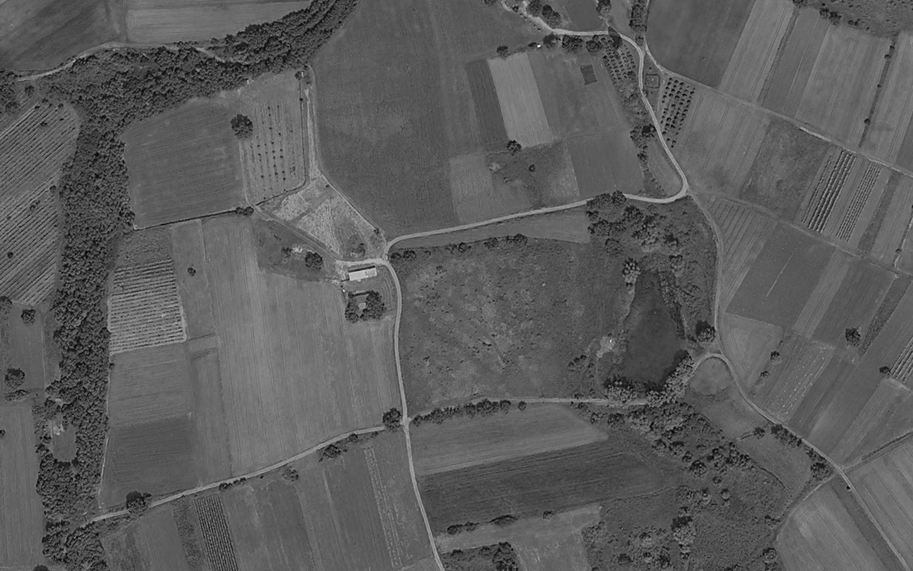

9 Jul 09:14
SRK
ISR
Strike Gambit
98%
Good
ISR Gambit
98%
Good
Intent
Plan
Exit
Takeoff
Destination
point
Orbit/hold
Follow
Waypoint
INTENT
Back
0 Turns
Takeoff Task Properties
Transition Altitude AGL
m
Range 0–500 m · step 1 · type or hold ±
Transition Distance
m
Range 0–2000 m · step 5 · type or hold ±
Climbout Heading
°
Range 0–359° · wraps · step 1 · type or hold ±
Center on Map
Delete Intent
Loiter Task Properties
Coordinate
50.215524
lat
10.325790
lon
Loiter Type
Orbit on Target
Circle
Racetrack
Hover in place
Number of turns
0 = loiter indefinitely · step 1 · type or hold ±
Radius
m
Range 10–5000 m · step 10 · type or hold ±
Altitude MSL
569 m
Ground Elevation
369 m
Leave Once Aligned
Clockwise
Center on Map
Delete Intent